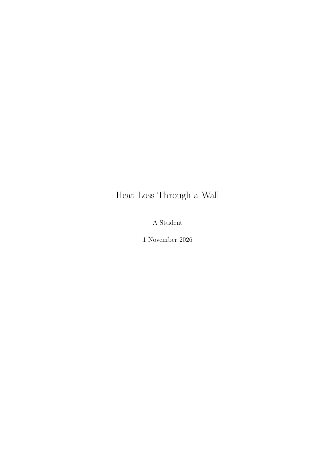
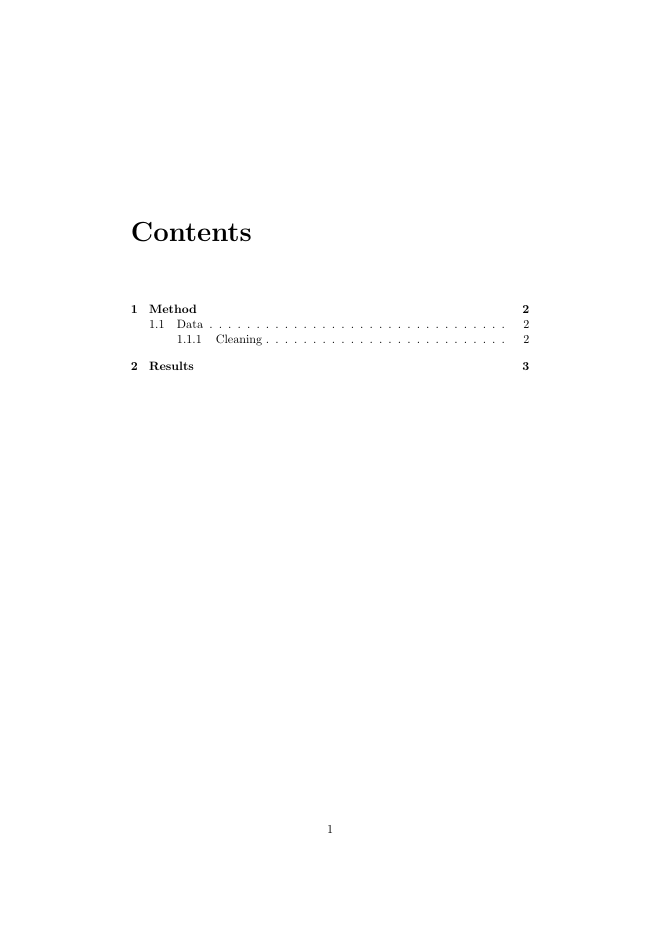
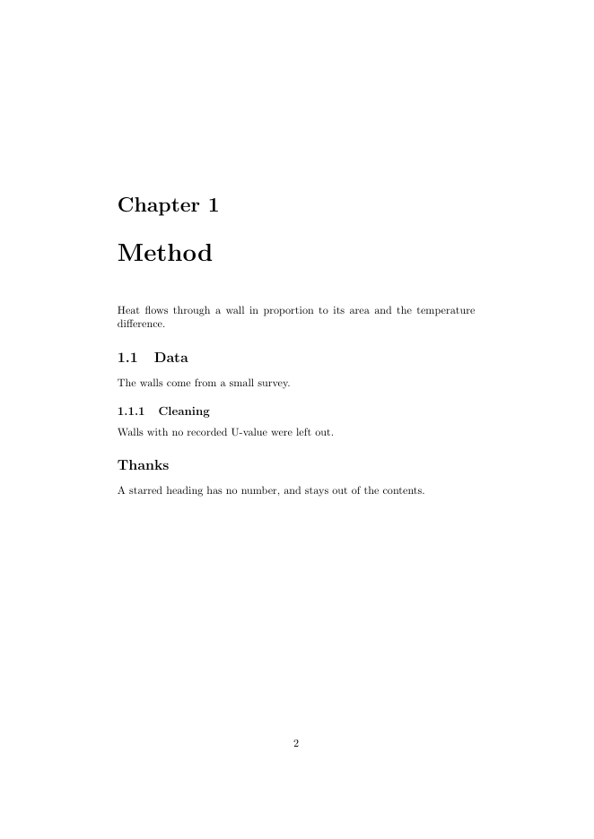

Document classes
The class sets the overall type of document.
| Class | For |
|---|---|
article |
Papers and short reports |
report |
Long reports with chapters |
book |
Books |
beamer |
Slides |
Headings and contents
\section{Method}
\subsection{Data}
\subsubsection{Cleaning}
\tableofcontentsIn a complete report, the title page, the contents and each chapter start on new pages:
chapters.tex
% A long document with a title page, contents and chapters. Build: pdflatex chapters, twice
\documentclass[11pt,a4paper]{report}
\title{Heat Loss Through a Wall}
\author{A Student}
\date{1 November 2026}
\begin{document}
\maketitle
\tableofcontents
\chapter{Method}
Heat flows through a wall in proportion to its area and the temperature difference.
\section{Data}
The walls come from a small survey.
\subsection{Cleaning}
Walls with no recorded U-value were left out.
\section*{Thanks}
A starred heading has no number, and stays out of the contents.
\chapter{Results}
Insulated walls lose the least heat.
\end{document}Compile it twice, because the contents are only known after the first run.



Numbers come automatically, and adding a star, as in \section*{Thanks}, leaves a heading unnumbered and out of the contents. Split long documents into files with \input{chapter1}.
Text and fonts
\emph{emphasis} \textbf{bold} \texttt{code} \underline{underlined}
{\small smaller text} {\large larger text}Prefer \emph over forcing italics, because it describes meaning, and it adapts when nested. For dashes, - joins words, -- makes ranges such as 10--20, and --- is a long dash. Quotes are written as two backticks and two apostrophes.
Fonts
With pdflatex, fonts come from packages, for example \usepackage{helvet} with \renewcommand{\familydefault}{\sfdefault} for a sans-serif body. With xelatex, you can name any installed font:
\usepackage{fontspec}
\setmainfont{Source Serif 4}Colour
\usepackage{xcolor}
\definecolor{brand}{HTML}{0D6A6E}
\textcolor{brand}{Coloured text}Define each colour once, by name, so that you can change the whole document from one line. Don't rely on colour alone to carry meaning, because some readers can't see the difference and pages may be printed in black and white.
Lists
\begin{itemize}
\item A point
\end{itemize}
\begin{enumerate}
\item A first step
\end{enumerate}Page layout
\usepackage[a4paper,margin=2.5cm]{geometry}
\usepackage{setspace}
\onehalfspacing
\usepackage{fancyhdr}
\pagestyle{fancy}Links
\usepackage{hyperref} % load this near the end of the preamble
\href{https://example.org}{a link}
\url{https://example.org}hyperref also makes every cross-reference and contents entry clickable.
Text © Ahmad Ammar, licensed under CC BY 4.0. Example code © Ahmad Ammar, MIT licence. Written during a PhD supported by a Vice-Chancellor's Research Scholarship (VCRS) from Ulster University.